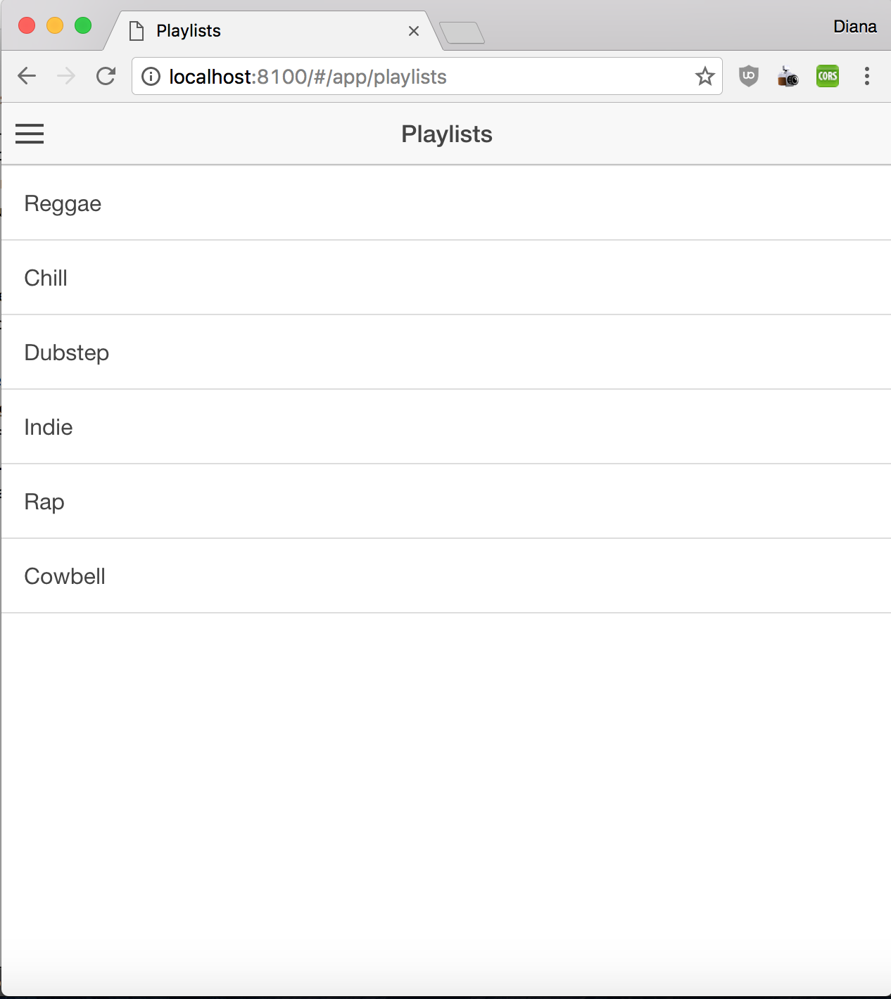
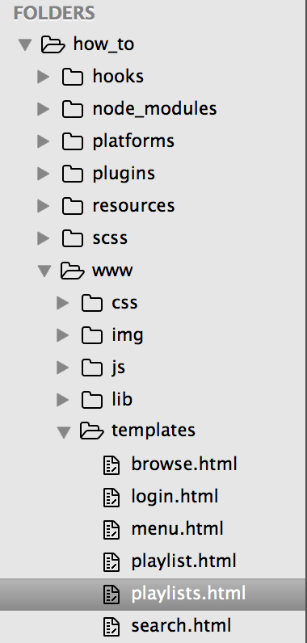
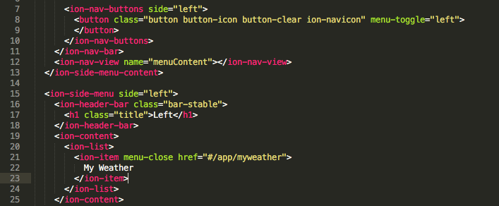

Currently, your application should look like the following:

We're going to be building a simple app that uses geolocation to find the user's location and displays it to the user, then uses that location retrieve and display the current weather for the user's location. The simplicity of this app means that we don't need much of the pre-built formatting given by the Ionic Sidemenu starter template, so let's start taking it apart.
When Ionic generated the code that makes up the current version of the app, it followed a specific file structure. You should navigate to your how_to folder in Finder. Inside there, you'll find another folder called www; inside that folder is another folder called templates. Inside here are the Views for your application.

Ionic is built upon Angular, so the app's organization follows the Model-View-Controller (MVC) design pattern. Views are the portion of the application responsibile for visually presenting data to the user.
We only want to have one menu option from the side menu already created, the index view that will hold the user's weather and location. Having an application that consists of a single page means that it is, perhaps, a little silly to have a menu at all, but we'll be leaving it in in the interest of demonstrating how the side menu is implemented in general. Currently, the index view is of the file playlists.html, so let's rename that to myweather.html. Following that, delete the file named playlist.html, as well as the files named login.html, search.html and browse.html. At this point, the only file that you have not deleted or renamed is menu.html; this file governs the format of the side menu that pops out when clicked, so we're going to leave the name of the file the same.
If you still have your browser preview of the app open, you might have noticed that the screen has gone blank. This is to be expected, and will be rectified after we've finished making some basic changes to our view structure.
In menu.html, there are now a series of broken links that we need to fix. You should rename the links and point them at the new names of the files we just renamed, as so:

For now, we're done changing the views. It's time to change the routes to point to the new views.